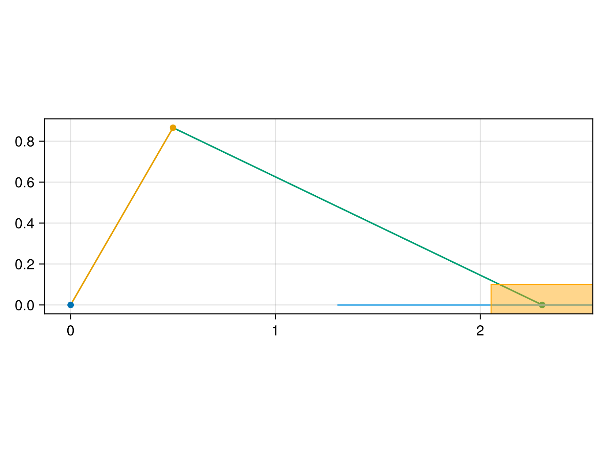

Примеры
В каталоге examples/ лежат готовые сценарии. Они же — лучшие шаблоны для своих задач: скопируйте ближайший по смыслу файл и поменяйте параметры.
Запуск из корня клона:
julia --project=examples -e 'using Pkg; Pkg.instantiate()'
julia --project=examples examples/simple_example.jl
julia --project=examples examples/crankshaft.jlКаждый сценарий активирует окружение examples/ самостоятельно, но пути результатов (out/...) считаются от текущего каталога, поэтому запускайте из корня клона. Видео попадают в out/; этот каталог игнорируется гитом.

Каталог сценариев
| Файл | Что показывает |
|---|---|
simple_example.jl |
минимальный маятник: заделка, шарнир, гравитация, запись видео |
pendulum.jl |
шестизвенный механизм с двумя заделками и тремя крутильными пружинами |
crankshaft.jl |
кривошипно-ползунный механизм: шарниры, ползун, мотор, линейная пружина |
crankshaft_link2d.jl |
тот же механизм, но звенья нарисованы Link2DVisual |
inclined_surface.jl |
ползун на наклонной направляющей под действием гравитации |
slinear_spring_example.jl |
масса на линейной пружине вдоль горизонтальной направляющей |
sensor_example.jl |
все четыре типа датчиков и графики измерений |
linear_actuator.jl |
позиционный линейный привод; сверка λ с аналитикой |
inverse_pendulum_control.jl |
обратный маятник на ползуне с обратной связью в prestep |
d_pend_torq.jl |
двойной маятник с моментным приводом и реверсом цели |
stat_bar.jl |
статика трёхзвенной цепи: реакции, моменты пружин, сохранение решения |
diag_bars.jl |
восьмизвенная цепь с двумя заделками и пружинами |
parmech.jl |
параллельный механизм из кривошипов и стола |
real_5bar.jl |
пятизвенный механизм с реальными массами и моментами инерции |
hinge_with_drift.jl |
контур звена через MeshVisual, поведение шарнира |
test_forward_kinematic.jl |
прямая кинематика: kinematic_constrains! и визуализация одного состояния |
Чему учиться в примерах
- Сборка системы —
simple_example.jl: тела, связи,assemble!, начальное состояние, интегрирование. - Сложные механизмы —
crankshaft.jl,real_5bar.jl,parmech.jl: комбинация шарниров, ползунов, пружин и приводов. - Приводы —
linear_actuator.jlиinverse_pendulum_control.jl:prestep, согласованные цель и её производная. - Статика —
stat_bar.jl:static_solver!, реакции черезget_lms, моменты пружин, сохранение матрицы решения. - Датчики —
sensor_example.jl:sys.measure!и графики. - Визуализация —
crankshaft_link2d.jl,hinge_with_drift.jl: визуальные компаньоны и пользовательские формы.
Что стоит знать, запуская примеры
- Первый запуск долгий: Makie компилируется.
GLMakieтребует дисплея; в примерах используетсяCairoMakie.- Часть сценариев печатает
Assembling failed!— это исторический артефакт проверкиassemble!на истинность: функция ничего не возвращает, поэтому сообщение выводится всегда. На расчёт оно не влияет. real_5bar.jlпишетtriv_dyn.mp4в корень репозитория, а не вout/.framerateвrecordдолжен быть целым числом; некоторые примеры передаютFloat64, Makie округляет и предупреждает.- Демпфирование
LinearSpringпока не действует (см. главу «Силы»).